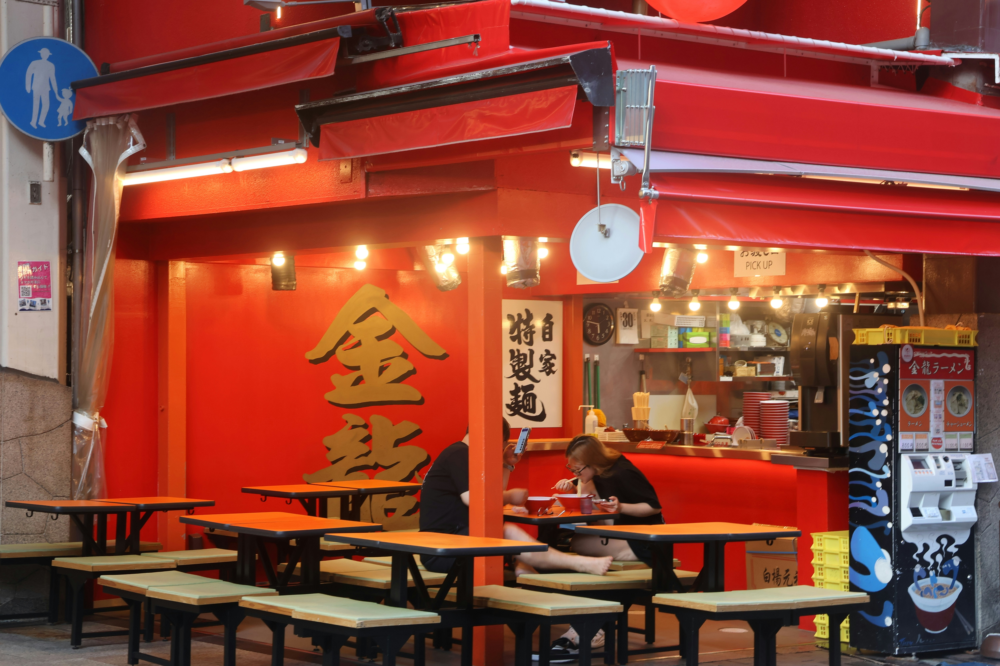

The signature. Pork bone broth cooked for hours, thin noodles, chashu pork, soft-boiled egg, nori, and spring onion. Get the extra egg — its worth it.
Featured Spot
One place in Auckland that actually lives up to the hype. This is where I take people when I want to show them what good ramen looks like.

Auckland CBD
Ikkoryu Fukuoka Ramen
My mates put me onto this place in Year 10 and I've been going back ever since. Its a proper Japanese ramen chain that does tonkotsu broth the right way — rich, creamy, and way more flavour than anything you'd expect from a bowl of noodles.
The vibe is casual, the portions are solid, and its not too expensive for what you get. Its the kind of place where you go in hungry and leave genuinely satisfied.
What People Say
"Best ramen in Auckland by a mile. The tonkotsu broth is so rich and the noodles are perfect. Been coming here for years."
— Google Review, ★★★★★
"Decent prices for CBD, generous portions, and the staff are really friendly. The gyoza are a must. Will keep coming back."
— Google Review, ★★★★☆
"Took my family here for the first time and they were converted. The spicy miso is incredible. Already planning to go back."
— Google Review, ★★★★★